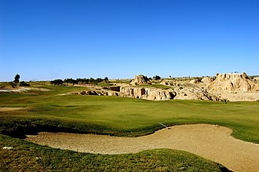
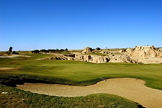

Tozeur est une ville tunisienne aux confins de l'Atlas et du désert du Sahara, la plus grande des cinq oasis que compte le Jérid. Progressivement construite autour de sa palmeraie, elle est le chef-lieu du gouvernorat du même nom.
L'arrivée des musulmans au viie siècle coïncide avec l'apogée de l'agriculture et du commerce. Pendant le Moyen Âge, la région de Tozeur est appelée « pays de Qastiliya », comme mentionné par le célèbre géographe arabe Al-Bakri (1014-1094), qui signale aussi que Tozeur, entourée d'une grande muraille de pierre, en est la métropole. Ce nom provient de la succession de villages fortifiés appelés castella

L'agriculture représente le principal secteur économique de Tozeur, suivie par le tourisme, qui lui fait concurrence pour l'accès aux ressources aquifères. Tozeur vit surtout de la monoculture du palmier-dattier. Selon Claude Llena (dans son article de 2004) la situation des agriculteurs s'est fortement dégradée au xxe siècle, car l'eau est « devenue un bien comme les autres », payant, conduisant nombre d'agriculteurs à travailler dans le tourisme. D'après Abdelaziz Barrouhi, 90 % de la consommation en eau de la ville reste liée à l'agriculture


 
